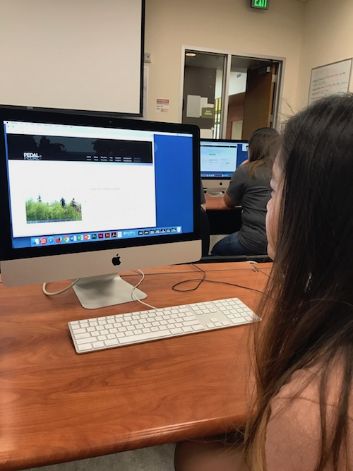
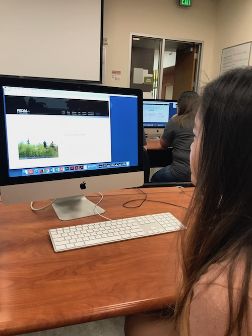
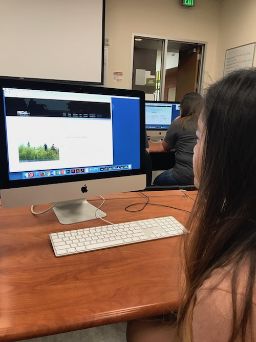

My target audience test results showed me many aspects of my project that were successful as well as some that needed more work. The experience was very valuable for me and although somewhat awkward, I think it was more helpful to have the period of silence for me to understand how user navigate my site.
The user interface and scrolling animations recieved positive feedback. Also, users enjoyed the smooth transitions between the pages.
The aspects that I should change are about the homepage as well as making the navigation bar more representative of what page the user is on. The icons on the why bike page are additionally not clear representations of what the pages mean. This can be improved by changing the icons to make them more semantic. Another aspect I received feedback about was making the responsive Instagram feature reflect how large screen is with how many photos on the page.
